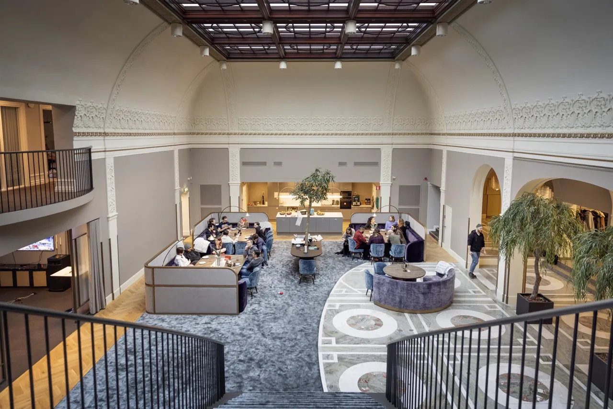

The lore about my favorite games so far...
But First Here is where the studios who made the game in the first palce is located.
Hertig Johans gata 6, 541 30 Skövde, Sweden
Coffee Stain Studios Doesn't have a phone number as they keep a more software-business-approach, to their inquieries. They believe it to be more professional to do in person meetings or emails instead of phone calls.
Here is a map of where the studio is located.
Coffee Stain Studios Website
So why Cofee Stain Studios?
Coffee Stain Studios is a game development company based in Skövde, Sweden. They are known for creating unique and innovative games that often feature quirky humor and creative gameplay mechanics. Some of their most popular titles include "Sanctum," "Goat Simulator," and "Satisfactory." The studio has gained a reputation for pushing the boundaries of traditional game design and embracing unconventional ideas, which has resonated with players looking for fresh and entertaining experiences. Their games often incorporate elements of sandbox gameplay, allowing players to explore and interact with the game world in unexpected ways. Overall, Coffee Stain Studios has established itself as a prominent player in the indie game development scene, known for its creativity and willingness to take risks.
They are known for many games, including Goat Simulator, Satisfactory, As we descend and Deep Rock Galactic.
The Lore About Coffee Stain Studios
Let me explain to you the lore over the company so you can know more about them in the future.
Coffee Stain Studios was founded in 2010 by a group of friends who shared a passion for video games and game development. The studio's name is inspired by the idea of a coffee stain, which represents the imperfections and quirks that make life interesting. This philosophy is reflected in their approach to game design, where they embrace unconventional ideas and prioritize creativity over conformity.
The studio's first major success came with the release of "Sanctum" in 2011, a tower defense game that combined first-person shooter mechanics with strategic gameplay. The game received positive reviews for its innovative design and engaging gameplay, establishing Coffee Stain Studios as a promising new player in the indie game development scene.
In 2014, Coffee Stain Studios released "Goat Simulator," a humorous and intentionally glitchy game that allowed players to control a goat and wreak havoc in an open-world environment. The game became a viral sensation, garnering millions of downloads and spawning numerous spin-offs and expansions. Its success helped solidify the studio's reputation for creating unique and entertaining experiences that defy traditional gaming conventions.
Following the success of "Goat Simulator," Coffee Stain Studios continued to innovate with the release of "Satisfactory" in 2019, a first-person factory-building game that challenged players to design and optimize complex production systems on an alien planet. The game received critical acclaim for its depth and complexity, further cementing the studio's status as a leading force in the indie game development community.
In addition to their game development efforts, Coffee Stain Studios has also been involved in publishing and supporting other indie developers through their publishing arm, Coffee Stain Publishing. This initiative has helped bring a variety of unique and innovative games to market, further contributing to the studio's mission of promoting creativity and originality in the gaming industry.
Overall, the lore of Coffee Stain Studios is one of creativity, innovation, and a willingness to embrace imperfections and quirks. The studio's commitment to pushing the boundaries of traditional game design has resonated with players around the world, making them a beloved and influential presence in the indie gaming community.
Here is an image of what the studio looks like..
 Coffee Stain Studios Wiki